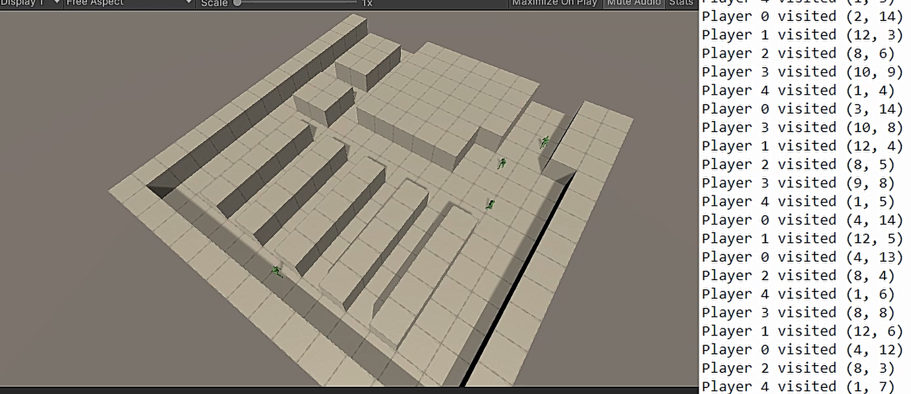
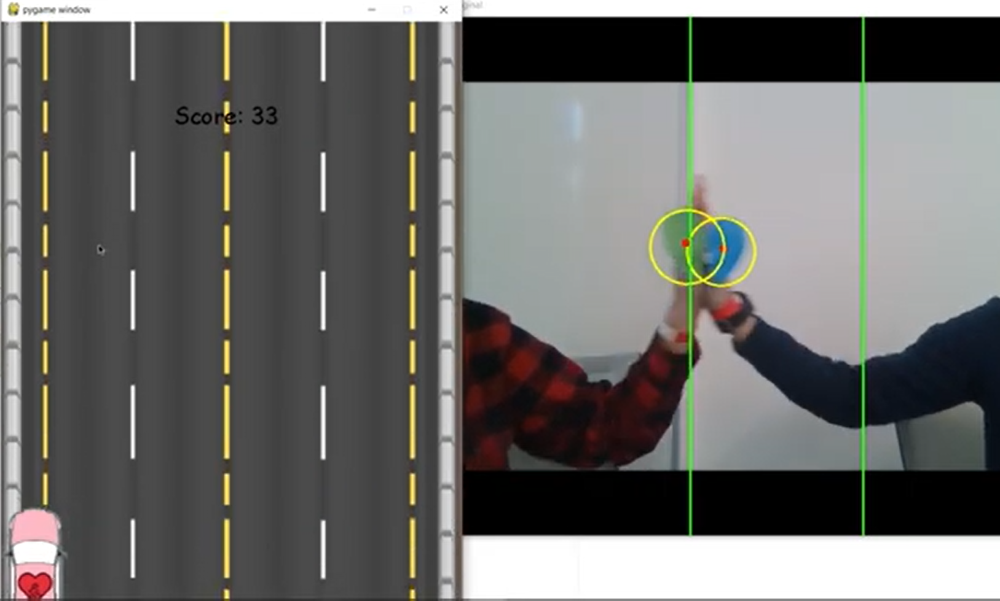
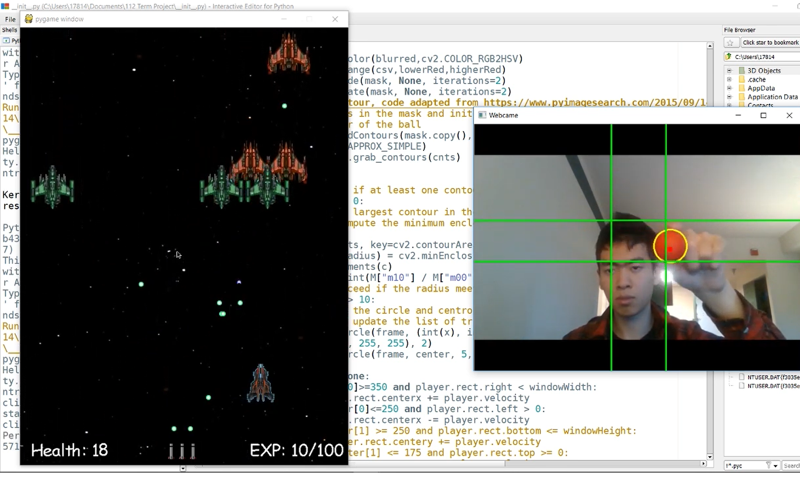

ShopSim - C#, Unity
Jan 2021

Over the winter I created a fully animated 3D animation/simulation of shoppers pathing in a shop.
I used Unity navigation to make pathing calculated at real time.
I used finalIK to make realistic animations for the shoppers' 3D model.
The simulation records paths of each shopper when they choose a destination to walk towards.
Enter the Arena - C#, Unity
Sept 2018 - Dec 2018
In my first year, I worked in a team of 9 people in Game Creation Society.
This is a 3D VR hack and slash game using HTC live.
I worked on the enemy attack logic and did some testing.
Here is a link to the GCS website
Couple Trouble - Python, Pygames, OpenCV
Feb 2020

I lead a team of 4 to participate in Tartan Hacks 2020.
We won the "Best Valentines Hack" award.
I was the main programmer in charge of coding the main game.
I used OpenCV to implement a control system that detects two different colors.
The players has to hold hands wearing rings to control the car and avoid obstacles.
If the players do not coordinate well and separate their hands, it's game over.
Here is a link to a YouTube video about this game.
CV Shooter- Python, Pygames, OpenCV
Feb 2020

This was my 15-112 Project. I scored 97% on this project.
It is a top-down space shooter game.
I used OpenCV to implement a control system that detects a red color.
The game uses a dynamic difficulty system that adjusts itself to the player's performance.
The boss has various different attack patterns and a cool laser attack.
Here is a link to a YouTube video about this game.